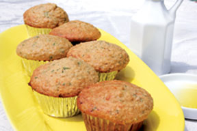
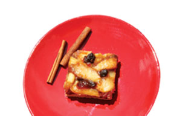
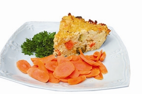

Tap The Culinary Wisdom Of Our Ancestors: Discover Millet
A popular whole grain in ancient civilizations, today we can learn to appreciate millet anew for its fabulous flavor and nutrition.
By Robin Asbell
December 2008/January 2009
Imagine you’ve just ordered your favorite dish at a Chinese restaurant. When your stir-fry arrives, it is served over a steaming, fragrant yellow grain, with no rice or noodles in sight. If rice and wheat hadn’t conquered the world, all of us would probably still be eating this tiny, tasty grain.
In fact, several lesser-known grains played important roles in ancient civilizations, in part because they were hardy, fast-growing, needed little water or care, and were incredibly nutritious.
Millet, the tiny yellow grain we usually reserve for birdseed, was once the primary grain of northern China. Recent research found evidence of its cultivation in China’s Yellow River Basin in 6,000 B.C. and suggests that several thousand years of substantial political and scientific development was made possible by its cultivation. Millet also was cultivated all over northern Europe, west Africa and India, and is still part of the healthy diet of the Hunza tribe, whose members live famously long lives in the Himalayas.
There are thousands of varieties of millet, though only a few in North America (unless you count crabgrass, a wild relative). Millet’s extra bonus, which was discovered by the Romans, is that it can be stored for several years if left in the seed cone.
Today, we revisit the golden grain and appreciate it anew for its mild, nutty flavor (when toasted, it tastes like cashews), adaptable texture (can be creamy or fluffy, like rice, and heartily absorbs flavorful liquids). It’s also highly nutritious: The quick-cooking little seeds are 15 percent protein, and notably alkaline, making them very digestible. A serving also delivers a good bit of vitamins, minerals and amino acids, especially tryptophan, which helps regulate appetite, sleep and mood.
Most health food stores and grocery stores that stock bulk foods offer millet flour and hulled millet for eating. If you want to grow it, know that millet garden seeds are encased in a tough hull. The hulled millet you can buy for eating is almost always the proso variety (Panicum miliaceum), which has the largest seeds and is easily threshed. Proso and foxtail (Setaria macrocheata) millet are the oldest known varieties. Pearl and finger type millets can be grown by home gardeners and threshed, or hulled, by hand - if you want an adventure. (Millet is threshed by beating the heads with sticks until the grains come loose.)
You’ll find unhulled millet seeds to grow through our Plant and Seed Finder (you can search for common or Latin names), where you can search the websites of more than 500 seed companies for culinary varieties of millet.
Parmesan Parsley Millet Muffins
Sweet muffins are nice most of the time, but a savory muffin like this is a great change of pace. These are wonderful with a bowl of minestrone, a few scrambled eggs, or even a glass of wine.
1/3 cup millet, to make 1 cup cooked
1 cup water
1 1⁄4 cups white whole wheat flour
3/4 cup millet flour
1/4 tsp salt
1 tsp baking soda
1/2 tsp baking powder
1/4 cup honey
2 large eggs; separate out yolks
1 cup buttermilk
1/4 cup extra virgin olive oil
3/4 cup shredded Parmesan or other hard, aged cheese
1/2 cup fresh parsley, chopped
Preheat the oven to 375 degrees Fahrenheit. Line a muffin pan with cups or lightly coat it with oil. Dry-toast the millet in a small skillet, holding the pan over medium-high heat and swirling the grain until it crackles and smells toasty, just a few minutes. Pour the hot grain carefully onto a plate to cool slightly. Bring the water to boil and add the millet. Return to a boil and lower the heat to the lowest setting, then cover tightly and simmer for 25 minutes. Remove from heat and let stand 10 minutes, then uncover, fluff with a fork, and let cool.
In a large bowl, stir together the flours, salt, baking soda and baking powder. In a small bowl, whisk the honey, egg yolks, buttermilk and olive oil. In a clean bowl, whip the egg whites to firm peaks. Stir the buttermilk mixture into the dry ingredients, then stir in the cooked grain, cheese and parsley. Fold in the egg whites. Scoop the batter into the prepared cups and bake for 25 to 30 minutes, or until a toothpick inserted into the center of a muffin comes out clean. Cool on a rack. Makes 12 muffins.
Cinnamon Apple Bars with Millet Crust
The sturdy crust of these bars is a cookie in itself, and cradles a tangy filling. If you can’t find millet flour, grind millet 1/4 cup at a time in a coffee or spice grinder until it’s a fine powder.
Crust
6 tbsp unsalted butter, softened
3/4 cup powdered sugar
1 tbsp fresh lemon zest
1 tsp vanilla
1/4 tsp salt
1 large egg
1 1⁄2 cups millet flour, finely ground
1 cup unbleached flour
1 tbsp unsalted butter
Topping
1 tbsp unsalted butter, softened
5 medium Granny Smith apples (about 5 cups cored and sliced)
1/2 cup brown sugar
1 tsp cinnamon
1/2 cup raisins
1/4 cup fresh lemon juice
2 tbsp cornstarch
Preheat oven to 350 degrees. Cream butter, then beat in powdered sugar, zest, vanilla, salt and egg. Mix the flours in thoroughly. Coat a 9-inch square baking pan with butter, then press the mixture into it and up the sides about half an inch. Prick the crust with a fork and bake for 20 to 25 minutes, until golden and firm.
While the crust bakes, melt the topping’s butter in a sauté pan over medium heat, then add the apples. When they are soft and browned in spots, add the brown sugar, cinnamon and raisins, stirring until the sugar melts. In a cup, stir the lemon juice and cornstarch together, then add them to the apples. Cook a few more minutes, until bubbly and thick.
Pour the apples into the crust and bake for 10 minutes, then cool. Slice 3-by-3 to make 9 bars.
Cheddar-broccoli Millet Pie
A pile of grains under a stir-fry or stew is great, but if you’re tired of that presentation, try this pie. Grains, veggies and some protein are all baked into a pretty wedge of golden goodness - easy to eat or pack in a lunch.
2 cups onion, chopped
1 tbsp extra virgin olive oil
1 cup millet
3 cups vegetable or chicken stock
1/2 tsp salt
1 tsp dried thyme
1 medium carrot, chopped
3 cups broccoli florets, cut into small pieces
6 ounces sharp cheddar cheese, shredded
2 large eggs
Olive oil for pan
Heat a 2-quart heavy saucepan over medium-high heat for a few seconds, then add the oil. Add the onions and sauté, lowering the heat as they soften. Cook until golden and sweet. Add the millet and stir, cooking until the grains are hot to the touch and fragrant. Add the stock, salt, thyme and carrot, and bring to a boil. Cover tightly and lower heat to the lowest setting. Cook for 30 minutes, then quickly add broccoli to the pan, cover again, and let stand for 5 minutes. Uncover and fluff, let cool.
Preheat oven to 400 degrees. In a large bowl, stir the millet with the cheese and eggs and scrape into greased pie pan. Bake for 45 minutes, until golden on top and firm to the touch. Slice and serve warm. Serves 6.
Creamy Squash and Millet Soup with Smoked Salmon
Smoky salmon transforms a simple dish into a sustaining meal.
1 tbsp extra virgin olive oil
1 cup onion, chopped
2 cups butternut squash, cubed
1/2 cup millet
2 1⁄2 cups vegetable or chicken stock
1 cup whole milk
1/2 tsp salt
1 pinch cayenne pepper
6 ounces smoked salmon, skinned and boned (about a third crumbled finely)
Garnish: 1/4 cup parsley, chopped
Heat oil in a 2-quart saucepan over medium heat. Sauté onions until soft, then lower heat and cook slowly until golden, about 10 minutes. Add the squash and millet and raise the heat, stirring until the millet is hot and the squash lightly browned. Add the stock, bring to a boil, and reduce heat to the lowest setting. Cover and cook for 40 minutes, until broken apart and porridgey.
Transfer the contents to a food processor or blender. Hold the lid with a towel, taking care not to burn yourself. Purée thoroughly, then gradually purée in the milk. Add salt and cayenne, and pulse to mix.
Scrape the soup back to the pan to reheat. Stir the crumbled salmon into the soup with most of the parsley. Heat gently to infuse the soup with smoky flavor, about 5 minutes. Serve each bowl garnished with salmon chunks and parsley. Serves 4.
Sunshine Millet Porridge with Apricots and Carrots
Millet’s versatility is on display here - just prepare it with liquid and it becomes a soft breakfast cereal. The sunny yellow grains drink up sweet apple juice and commingle with apricots and carrot shreds, giving the porridge a natural sweetness. Taste it before you start sprinkling sugar over the bowl - you may find that you don’t need any additional sweetness!
1/2 cup millet
1 1/2 cups water
1 pinch salt
1 cup apple juice
1/2 tsp cinnamon
1/2 cup carrots, shredded
1/2 cup dried apricots, chopped
In a 1-quart saucepan with a tight-fitting lid, dry-toast the millet over medium-high heat. When the millet is fragrant and crackles slightly, add the water slowly. When the water boils, reduce heat to low, add salt, and cover. Cook for 25 minutes.
After 25 minutes, stir in the apple juice, cinnamon, carrot and apricots, and raise the heat to bring it back to a boil. As soon as it bubbles, reduce the heat to low again. Cover the pot and cook for 10 more minutes.
Uncover the millet and stir, the porridge should be thick and the millet very soft. Serve hot with milk, yogurt, or apricot nectar. Makes 3 cups.
HIGHLY RECOMMENDED by the Mother Earth News editors:
The New Whole Grains Cookbook: Terrific Recipes Using Farro, Quinoa, Brown Rice, Barley, and Many Other Delicious and Nutritious Grains by Robin Asbell (Chronicle, 2007). The millet recipes reprinted here only hint at the wide world of flavors and textures that awaits you when you begin incorporating nutritious whole grains into your diet. Order now.
Robin Asbell is the author of The New Whole Grains Cookbook: Terrific Recipes Using Farro, Quinoa, Brown Rice, Barley, and Many Other Delicious and Nutritious Grains (Chronicle, 2007).
|
 ROBIN ASBELL Parmesan Parsley Millet Muffins. “Try a savory, moist millet muffin - the sunny grains will make you smile!” |
 ROBIN ASBELL Cinnamon Apple Bars with Millet Crust. “Craving apple pie? A crunchy crust and cinnamon-y topping fill the bill in a snap!” |
 ROBIN ASBELL Cheddar-Broccoli Millet Pie. “There’s no ‘wedge issue’ with this pie. Everyone will agree it’s delicious” |
 ROBIN ASBELL Creamy Squash and Millet Soup with Smoked Salmon. “Creamy-smoky comfort food is just what you need on a cold night.” |
|
|